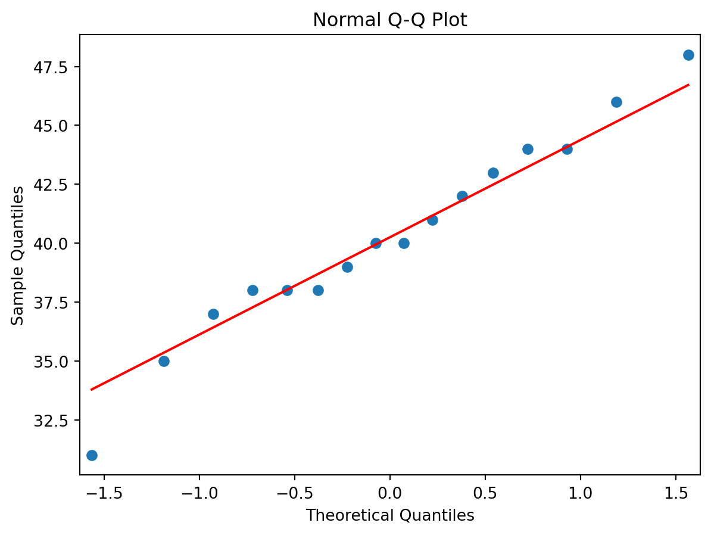

## 교재 출처 최하단에 표시 ##
# 예제 9: 예제 4에 주어져 있는 자료를 가지고 파이썬을 이용하여
# μ 에 대한 90% 신뢰구간을 구하고 예제 4에서 실시한 검정도
# 파이썬을 이용하여 다시 시행한 후 그 결과를 비교하라. (p.346)
# ------------------------------------------------------------------------------
# 예제 4: 어느 도시의 보건복지과에서는
# 그 도시의 상수원인 어느 호수의 수질에 관심이 있다고 한다.
# 수질을 나타내는 하나의 수치로 단위부피당 평균 세균수가 있는데,
# 그 수가 200 이상이면 상수원으로 적합 하지 않다고 한다.
# 호수의 열 군데에서 물을 떠서 조사한 결과 단위부피당 세균수가 다음과 같이 나타났다.
# 이 자료로부터 호수의 단위부피당 평균 세균수(μ)가 200보다 적다고 주장할 수 있겠는가? (p.330)
import numpy as np
bacteria = np.array([175, 190, 215, 198, 184, 207, 210, 193, 196, 180])
#_______________________________________________________________________________
# 예제 10: 다음에 주어진 자료를 파이썬을 이용하여 분석하고자 한다. (p.348)
x = np.array([31, 35, 37, 38, 38, 38, 39, 40, 40, 41, 42, 43, 44, 44, 46, 48])표본의 크기가 작을 경우에는 일반적인 통계적 추론 방법을 적용하기 어려울 수 있다. 이 경우, 정규분포 대신 t – 분포를 이용한 통계적 추론 방법에 대해 다루고자 한다.
1. 자료의 입력
2. t 분포
Student’s t Distribution
통계학에서 모집단의 표본 평균이 정규분포를 따르지 않는 경우에도 사용가능한 분포. 모집단의 분포가 N ( μ, σ2 ) 일 때 크기가 n 인 표본의 평균 x̄ 의 분포는 정확하게 N ( μ, σ2 / n ) 이다.
이를 표준화한 것이 아래와 같다:
일반적으로 σ 는 미지수이므로 이를 표본의 표준편차 s 로 추정하여 사용한다. 표본의 크기가 큰 경우, s 로 대체하여도 그 분포가 큰 영향을 받지 않는다.
그러나 표본의 크기가 작은 경우, 대체하게 되면 표준화된 확률변수의 분포는 표준정규분포와 달라지게 되며, 이를 t 분포 라고 한다.
정규모집단 N ( μ, σ2 ) 으로부터 임의추출된 표본을 X 1, …, X n 이라고 할 때, 표본 평균과 표본 분산을 아래와 같이 정의한다:
위 정의가 성립할 때 아래 식이 성립한다:
자유도가 (n – 1)인 t 분포를 따르고, 이를 기호로써 t (n – 1)로 표현한다.
표준정규분포와의
공통점 : 0 을 중심으로 대칭 & 종모양 분포 차이점 : 양 꼬리부분에 상대적으로 많은 확률이 존재 → 더 두꺼운 꼬리를 갖는다. 이때 자유도가 증가하면, t 분포의 꼬리는 표준정규분포의 꼬리에 가까워진다:
df = 1 : 자유도가 1인 경우, df = 5 : 자유도가 5인 경우
3. 모평균에 대한 추론
표본의 크기가 작거나 모집단이 정규분포를 따르지 않는 경우, t – 분포를 사용한다.
이때는 Z α / 2 대신 t α / 2 (n − 1) 을 사용하여 신뢰구간을 계산해야 한다:
위 식을 μ 에 대해 정리하면:
10장: 통계적 추론 → 3 - 5 → (2)번의 식은 위와 같이 수정되어야 한다.
표본 크기가 작을수록
t – 분포의 임계값이 커지므로, 신뢰구간이 넓어져 표본표준편차의 불확실성을 반영한다. t – 분포를 사용하여 신뢰구간을 더 넓게 잡으므로, 정확한 추정에 도움이 된다. 표본 크기가 충분히 크다면, t – 분포와 정규분포가 거의 같아지므로 이 경우에만, Z – 분포를 사용할 수 있다.
따라서:
또는 아래와 같이 나타낼 수 있다:
3-1. 가설 검정
검정통계량은 H 0 가 맞을 때 자유도가 ( n − 1 ) 인 t – 분포를 따른다.
각 대립가설에 대하여 유의수준 α 를 갖는 기각역은 다음과 같다:
검정통계량이 t 분포를 따르는 경우의 검정을 t 검정이라고 한다.
4. 신뢰구간과 양측검정의 관계
μ 에 대한 100 ( 1 − α ) % 신뢰구간은 아래와 같다:
H 0 : μ = μ 0 에 대한 양측검정에서의 기각역은 유의수준이 α 일 때 아래와 같다:
위 기각역의 여집합인 H 0 를 기각하지 못하고 받아들이는 영역을 ’ 채택영역 ’ 이라고 할 때
이 채택영역은 다음과 같다:
이를 μ 0 를 중심으로 풀어쓰면 다음과 같다:
위 과정을 바탕으로 다음과 같은 결론을 내릴 수 있다:
모수 θ 에 대한 100 ( 1 − α ) % 신뢰구간이 ( L, U ) 로 구해졌을 때, 가설 H 0 : θ = θ 0 대 H 1 : θ ≠ θ 0 에 대하여 유의수준 α 로 검정을 시행할 때의 결론을 의미한다.
5. 모표준편차의 추론
모표준편차의 추정과 검정에서는 정규성 가정이 중요한 역할을 한다.
이 가정이 충족되지 않으면, 신뢰구간 계산이나 가설 검정의 결과를 신뢰할 수 없다.
모표준편차 σ 를 추정하는 과정은 모분산 σ 2 에 대한 추정에서 출발하며,
이 모분산 σ 2 에 대한 추정에서 사용되는 것이 표본분산이다:
5-1. 점추정
Point Estimation
모집단의 모수를 단일 값으로 추정하는 방법이다.
모표준편차 σ 의 경우, 점추정은 표본표준편차를 사용하는 방식이다:
5-2. 구간추정
Interval Estimation 모집단의 모수를 특정 신뢰수준에서 포함할 것으로 예상되는 구간을 제공하는 방법이다.
모표준편차 σ 에 대한 구간추정은 모분산에 대한 신뢰구간을 기반으로 하여 계산되며,
이때 모분산 s 2 의 신뢰구간을 구하기 위해 카이제곱 분포를 사용한다.
5-3. 카이제곱 분포
Chi-Square Distribution
표본 분산을 모집단 분산과 비교하거나 범주형 변수 간의 독립성을 검정할 때 유용한 분포.
자유도에 따라 그 형태가 달라지며, 자유도가 커질수록 정규 분포와 유사해진다. 아래 수식은 표본 분산을 모집단 분산으로 표준화한 것이다:
자유도가 (n – 1)인 x2 분포를 따르고, 이를 기호로써 x2 (n – 1)로 표현한다. 모집단 σ 2 의 신뢰구간을 계산하기 위해 카이제곱 통계량을 사용한다: 위 분포로부터 구한 신뢰구간은 아래 식과 같다:
위 식에서 괄호 안에 있는 부등식을 σ 2 을 중심으로 풀어 쓰면 다음과 같다:
따라서 이 식으로부터 σ 2 의 100 ( 1 − α ) % 신뢰구간을 구하면 다음과 같다:
표준편차 σ 는 σ 2 의 양의 제곱근이므로,그의 신뢰구간은 σ 2 의 신뢰구간의 경곗값의 제곱근을 취하여 얻을 수 있다: 결론적으로, σ 에 대한 100 ( 1 − α ) % 신뢰구간은 위와 같다.
검정통계량은 H 0 이 맞을 때 자유도 df 인 카이제곱분포를 따른다. 각 대립가설에 대하여 유의수준 α 를 갖는 기각역은 다음과 같다:
예제 9의 ( 1 ) bacteria 에 대한 요약 통계량 계산하기.
xbar_b = np.mean(bacteria);print(xbar_b) # 평균
var_b = np.var(bacteria, ddof=1);print(var_b) # 분산 (자유도 1 사용)
sd_b = np.std(bacteria, ddof=1);print(sd_b) # 표준편차 (자유도 1 사용)
median_b = np.median(bacteria);print(median_b) # 중앙값194.8
172.62222222222226
13.138577633146681
194.5min_b = np.min(bacteria);print(min_b) # 최솟값
max_b = np.max(bacteria);print(max_b) # 최댓값
sum_b = np.sum(bacteria);print(sum_b) # 합계
n = bacteria.size;print(n) # 데이터 개수175
215
1948
10예제 9의 ( 2 ) 신뢰구간을 구하기 위해, 아래 2가지 함수를 사용한다.
추정량의 표준오차를 구하는 함수 t – 분포의 백분위수 함수
from scipy import stats
se_b = stats.sem(bacteria); print(se_b) # 표본표준오차
# 유의수준 0.1에 해당하는 t-분포의 임계값
t_alpha = stats.t.ppf(1 - 0.1 / 2, n - 1); print(t_alpha)
interval = t_alpha * se_b;print(interval) # 신뢰구간의 범위를 계산
CI = [xbar_b - interval, xbar_b + interval]; print(CI) # 신뢰구간4.154783053568769
1.8331129326536335
7.6161865478670645
[np.float64(187.18381345213294), np.float64(202.41618654786708)]90 % 신뢰구간은 194.8 ± 7.616 임을 알 수 있다.
예제 9의 ( 3 ) 검정하고자 하는 가설은 H 0 : μ = 200 대 H 1 : μ < 200 이며, 표본의 크기는 10 이다.
tval = (xbar_b - 200) / se_b;print(tval)
# 단측검정: 귀무가설 μ=200, 대립가설 μ<200
pval = stats.t.cdf(tval, n - 1);print(pval)
## 해석: P–값이 0.1211 로 유의수준 5% 에서 귀무가설을 기각할 수 없으므로
## 주어진 10 개의 자료로부터 호수의 단위 부피당 평균세균수가 200 보다
## 적다고 안심할 수 없다.-1.2515695604210733
0.12113884687382763예제 10의 ( 1 ) x 에 대한 요약 통계량 계산하기.
xbar_x = np.mean(x);print(xbar_x) # 평균
var_x = np.var(x, ddof=1);print(var_x) # 분산 (자유도 1 사용)
sd_x = np.std(x, ddof=1);print(sd_x) # 표준편차 (자유도 1 사용)
median_x = np.median(x);print(median_x) # 중앙값
min_x = np.min(x);print(min_x) # 최솟값
max_x = np.max(x);print(max_x) # 최댓값
sum_x = np.sum(x);print(sum_x) # 합계
n = x.size;print(n) # 데이터 개수40.25
18.2
4.266145801540309
40.0
31
48
644
16예제 10의 ( 2 ) x 에 대한 정규확률그림 그리기.
import numpy as np
import matplotlib.pyplot as plt
import statsmodels.api as sm
# 정규확률그림 그리기
sm.qqplot(x, line='s')
plt.title("Normal Q-Q Plot")Text(0.5, 1.0, 'Normal Q-Q Plot')
예제 10의 ( 3 ) 모평균 μ 에 대한 95% 신뢰구간을 구한다.
from scipy import stats
se = stats.sem(x);print(se) # 표준편차
t_alpha = stats.t.ppf(1 - 0.05 / 2, n - 1);print(t_alpha) # 95% 신뢰구간을 위한 t값
interval = t_alpha * se;print(interval) # 신뢰구간 계산을 위한 간격 계산
CI = [xbar_x - interval, xbar_x + interval];print(CI) # 신뢰구간1.0665364503850772
2.131449545559323
2.2732686324957263
[np.float64(37.97673136750427), np.float64(42.52326863249573)]95 % 신뢰구간은 40.25 ± 2.273 임을 알 수 있다.
예제 10의 ( 4 ) 검정하고자 하는 가설은 H 0 : μ = 38 대 H 1 : μ > 38 이며, 표본의 크기는 16 이다.
tval = (xbar_x - 38) / se;print(tval) # 표본표준오차
pval = 1 - stats.t.cdf(tval, n - 1);print(pval) # p값
## 해석: P–값이 0.026 이므로 유의수준 5% 에서 귀무가설을 기각하게 된다.
## 따라서, 평균이 38 보다 크다고 할 수 있다.2.109632539223229
0.026050840503660355